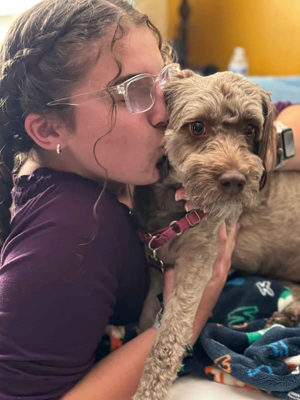
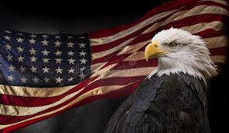

Cassandra Carone
About Me

Hi, I'm Cassie! There's not much to say about me besides the fact that I LOVE life! This world is absolutely marvelous, and I'm so grateful for the chance to be in it! I've been looking forward to this class and am so ready to begin my educational journey! I'm a big fan of learning, and I've always found natural curiosity to be one of the most incredible feelings we can experience. The desire (and ability) to learn are gifts from God, and I have an immense amount of gratitude for them.
United States of America

I hail from these great United States of America ('Murica' as we like to call it). We eat hot dogs and McDonald's for each and every supper, and dump tea into any available body of water. Our domesticated bald eagles tend to isolate themselves at the top of the tallest Redwood trees until the 4th of July, when they perform an armored arial show alongside our colorful explosives.